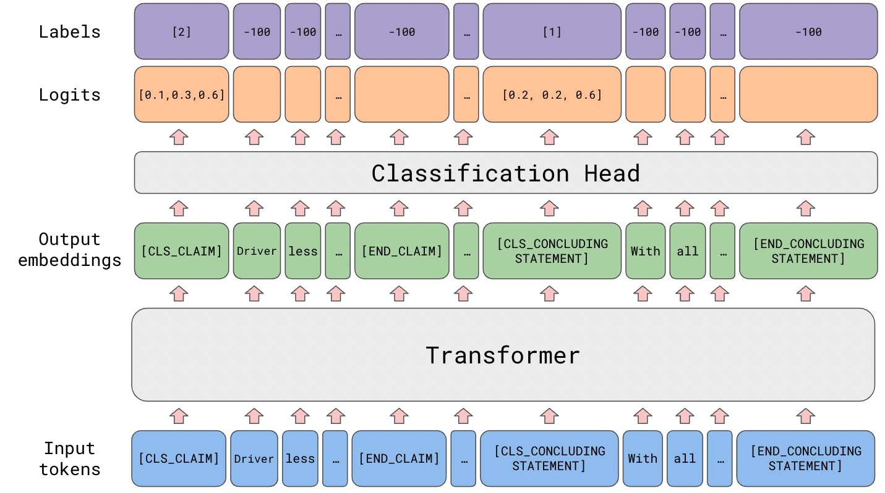

OBJECTIVE
Completed as part of my Natural Language Processing class, this group project involved building and training token classification models to identify abbreviations and long forms in biomedical texts using the PLOD-CW-25 dataset.
The work included extensive data preprocessing, feature extraction, and model evaluation to optimize accuracy. This project required collaboration with classmates, discussion of model approaches, and iterative testing to refine results.
It gave me hands-on experience applying NLP techniques to real-world data.
